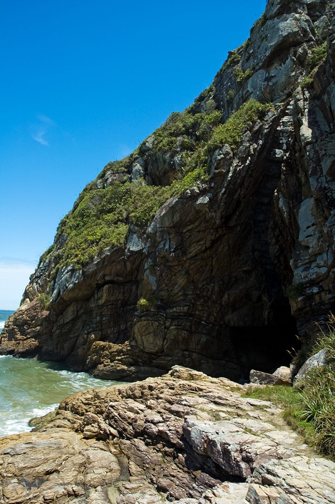
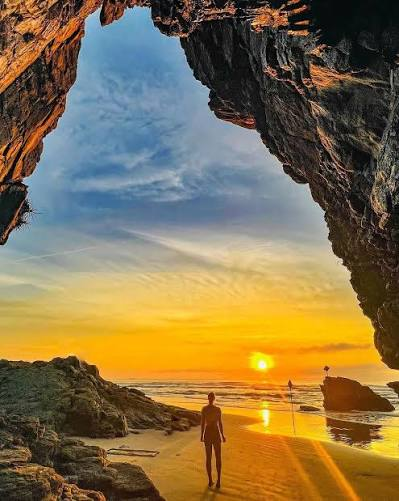
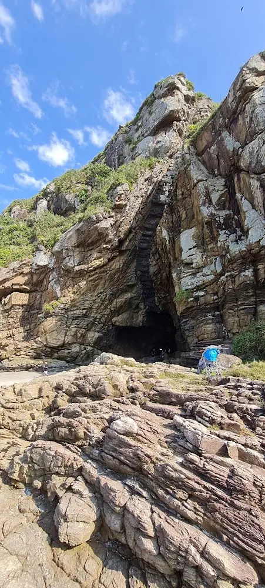

Gruta das Encantadas
Localizada no sul da Ilha do Mel (PR), a Gruta das Encantadas é uma formação rochosa esculpida pelo mar que une preservação ambiental, história indígena e caiçara, e uma rica cultura oral e artística inspirada nas lendas de sereias. Paraná.

A História da gruta das encantadas
Situada no sul da Ilha do Mel (PR), a Gruta das Encantadas é uma cavidade natural esculpida pelo mar que une natureza, história e cultura popular. Conhecida desde os tempos dos indígenas Caingangues e dos pescadores caiçaras, ganhou fama pelas lendas de sereias cujo canto atraía navegantes — histórias que hoje alimentam a literatura oral, a fotografia e a arte local. Desde o final do século XX, a área conta com leis rígidas de preservação ambiental e uma passarela de acesso para proteger o ecossistema

Arte e cultura
Localizada no lado sul da Ilha do Mel, em Paranaguá, litoral do Paraná, a Gruta das Encantadas é uma cavidade natural esculpida pela força das ondas ao longo do tempo sobre rochas antigas de migmatito e diabásio. Acessada a pé por trilhas e por uma passarela de madeira construída para preservar o ecossistema local, a gruta vai muito além de sua beleza geográfica, destacando-se como um importante símbolo da identidade caiçara e indígena da região.

Curiosidades
Curiosidades
A Gruta das Encantadas, localizada ao sul da Ilha do Mel no Paraná, ficou famosa pela lenda das sereias que atraíam pescadores com seus cantos e pela formação geológica causada pela erosão diferencial das rochas
Memória
vou compartilhar imagem da gruta.